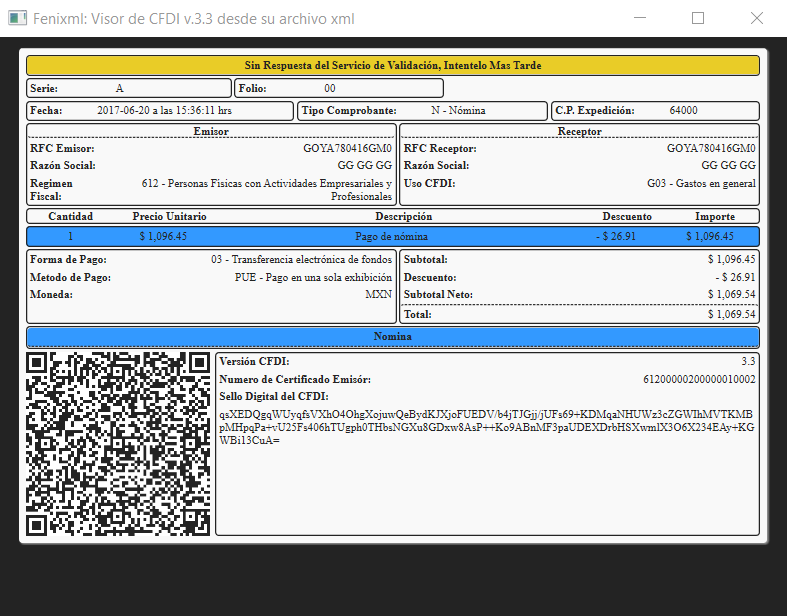

Validación
Realiza una solicitud de validación al SAT al momento de abrir el xml y muestra su resultado. El resultado de la validación se observará en la parte superior de la app con uno de los siguientes resultados:
Cuando aún no se obtiene una respuesta del servidor de parte del
SAT se observará el siguiente cuadro:
Esperando revisión de validación
Si la validación es correcta y el comprobante es valido se
observará lo siguiente:
Comprobante Valido y Vigente
Cuando la respuesta de validación tenga algún error (no significa
que el xml tenga error) se mostrará lo siguiente:
Respuesta Incompleta del Servicio de Validación, Intentelo Mas
Tarde
Si no se pudó obtener respuesta (No hay internet o no funciona el
servidor del SAT en ese momento) se mostrará lo siguiente:
Sin Respuesta del Servicio de Validación, Intentelo Mas
Tarde
Finalmente cuando se ha obtenido una respuesta negativa se
observará lo siguiente:
Respuesta de Validación Negativa: (respuesta del SAT)
Ventajas
- Permite visualizar todos los elementos importantes del xml, ademas de crear el codigo QR y la cadena original.
- Puedes ver y ocultar elementos para una mejor visualización de la información del xml.
- Trabaja con cualquier tipo de documento: Ingreso, Egreso, Traslado, Pago y Nomina, ademas de visualizar cualquier complemento del xml.
Restricciones
- Solo permite hacer una visualización de la información por lo cual no es posible guardar ni imprimir directamente desde la app.
- Solo funciona con documentos xml con la versión actual CFDI 3.3.
Descargar
Donaciones
Si le gusta la aplicación y desea apoyar al proyecto puede hacer una aportación economica, sin importar el monto su donación será de gran utilidad para seguir creando proyectos como este y seguir mejorando esta aplicación.
Instrucciones de Uso
- Una vez instalado en windows se vinculan automaticamente todos los archivos tipo xml para poder ser abiertos mediante el programa FeniXML, por lo cual con dar doble click sobre cualquier archivo xml automaticamente se abrirá el comprobante con el programa FeniXML.
- En caso que el xml que se pretenda abrir no sea un comprobante CFDI, no sea versión 3.3 o no tenga la estructura adecuada, (Implicaría que no es valido ya que no se siguieron las reglas para su generación), marcará un error el programa y se cerrará automaticamente
- Tambien es posible abrir directamente el programa XML desde el buscador de Windows y una vez abierto se le pedirá buscar el xml que desea visualizar como se muestra en las imagenes.
Galeria
